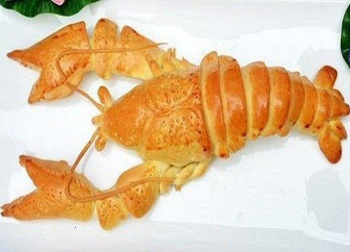
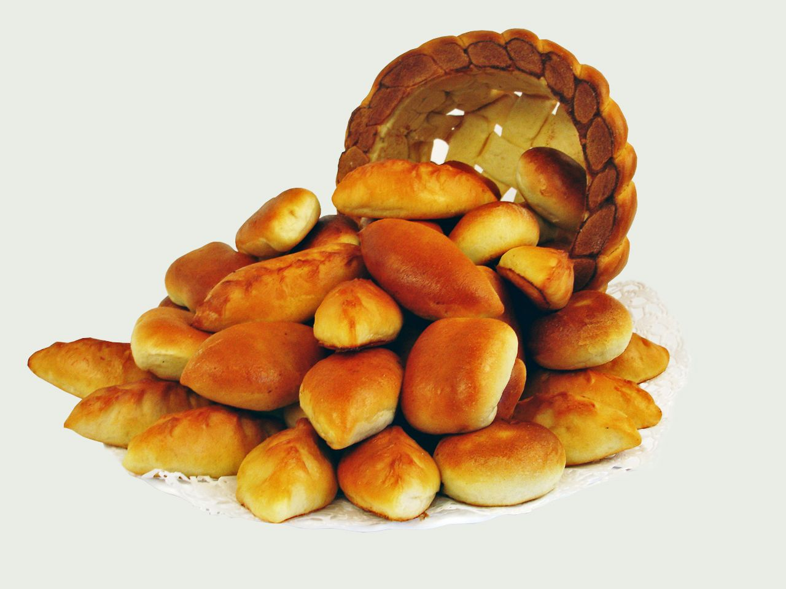
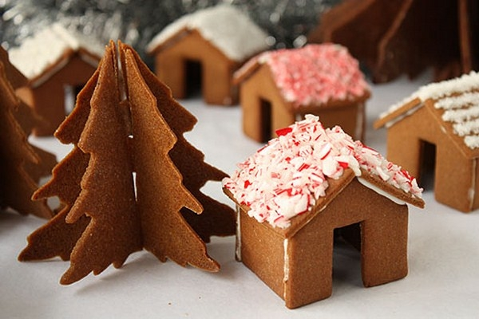

Пример рецепта. Время приготовления 40 мин.

Пример рецепта. Время приготовления 40 мин.

Пример рецепта. Время приготовления 40 мин.
Пример рецепта. Время приготовления 40 мин.
Рецепт "Гомбовцы"
 Гомбовцы (венгерское название "gombóc"- гомбоц) - булочки из дрожжевого теста на пару, творога или картофеля, чаще всего со сладкими, ягодными начинками. Есть у гомбовцев и своя особенность - после приготовления булочки обсыпают поджаренными сухарями.
Гомбовцы (венгерское название "gombóc"- гомбоц) - булочки из дрожжевого теста на пару, творога или картофеля, чаще всего со сладкими, ягодными начинками. Есть у гомбовцев и своя особенность - после приготовления булочки обсыпают поджаренными сухарями.
Ингредиенты
- Дрожжевое тесто - 800 г
- Сухари - 100 г
- Вишня - 200 г
- Сливочное масло - 50 г
- Сахар - 100 г
Приготовление
- В муку вливаем разведенные в молоке дрожжи, яйцо, сахар, соль и перемешиваем. Накрываем и убираем на 1,5 часа, за это время нужно тесто помешать пару раз.
- Измельчённые сухари поджариваем со сливочным маслом. Добавляем сахар.
- Когда тесто подошло и начинаем делить его на нужного размера кусочки. Из сформированных шариков растягиваем лепешку, в середину укладываем начинку — вишню с сахаром. Укладываем в пароварку, смазав предварительно низ гамбовцев маслом, убираем на 20 минут.
- Варим на пару 20 минут.
- После приготовления выкладываем на тарелку, смазываем растопленным сливочным маслом и валяем в сухарях с сахаром.